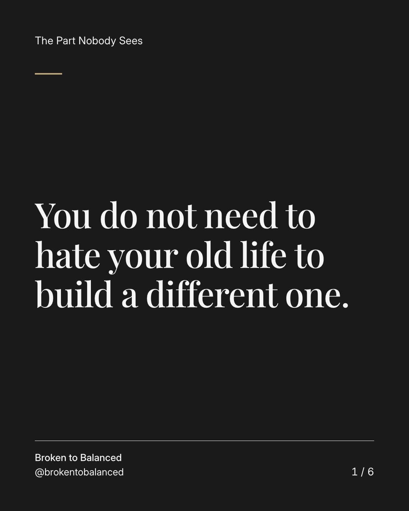
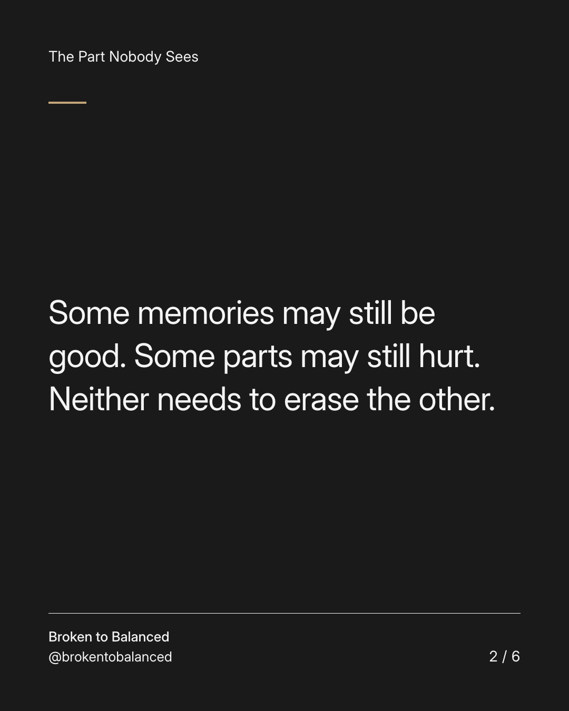
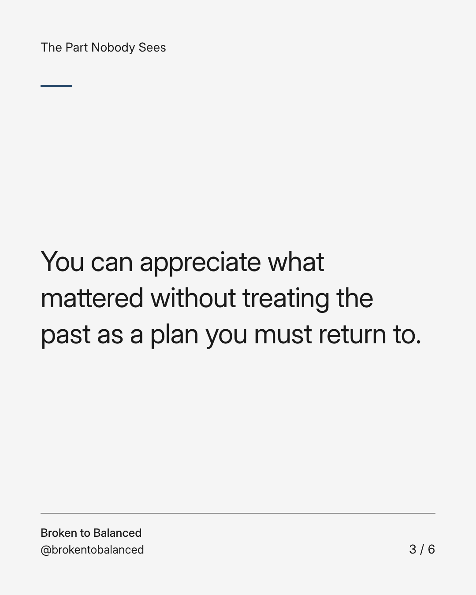
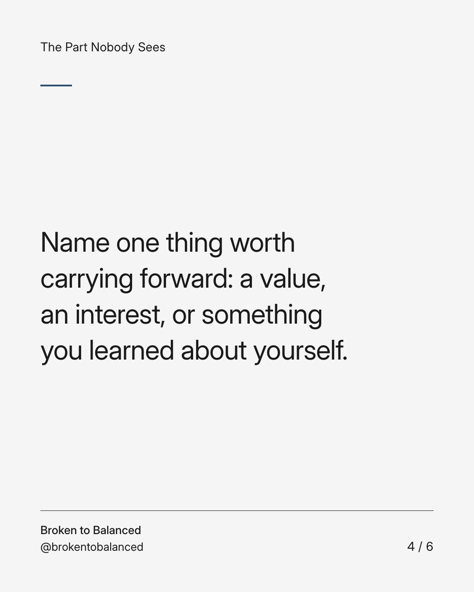
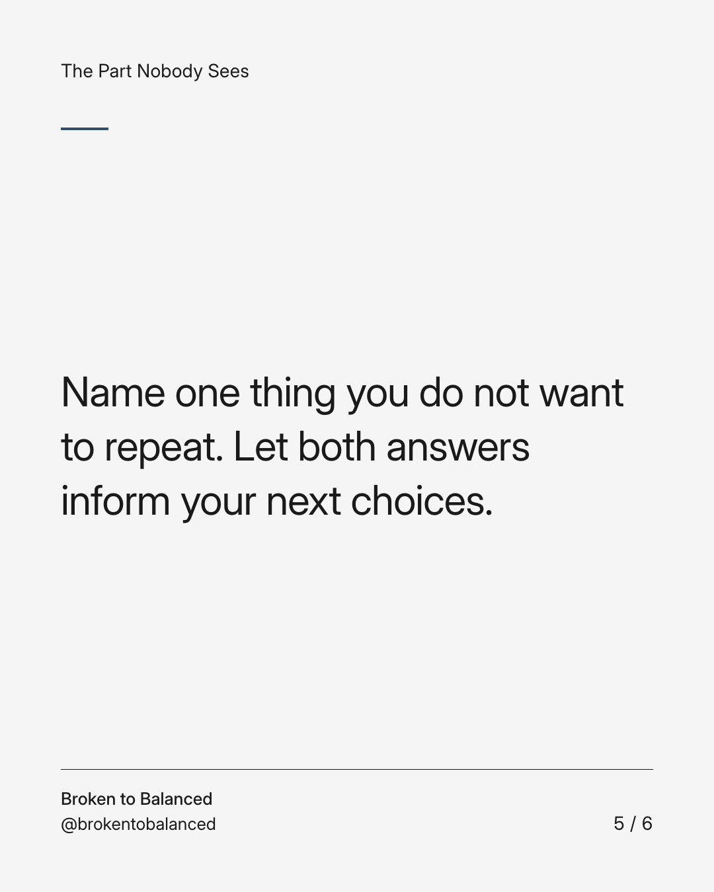
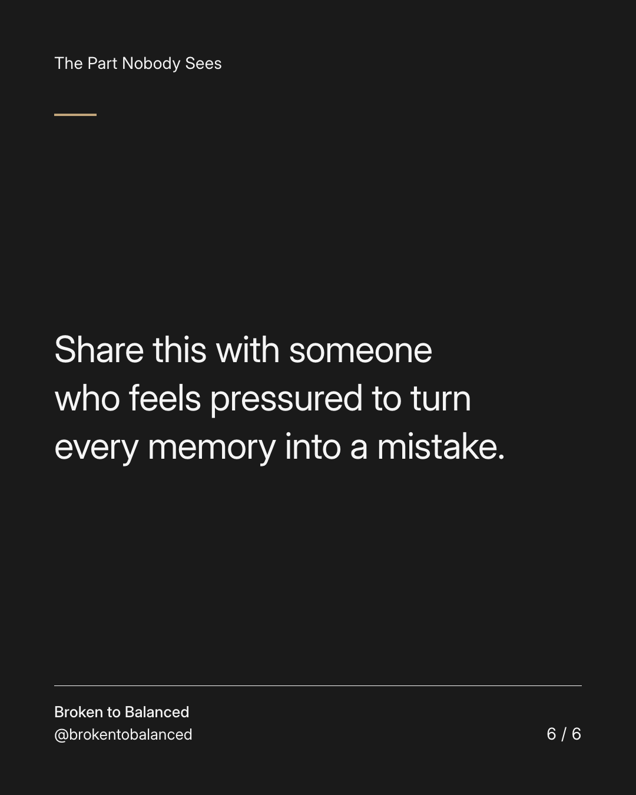

Exact text and accessibility text
You do not need to hate your old life to build a different one.
Slide 1 of 6. You do not need to hate your old life to build a different one.


Exact text and accessibility text
Some memories may still be good. Some parts may still hurt. Neither needs to erase the other.
Slide 2 of 6. Some memories may still be good. Some parts may still hurt. Neither needs to erase the other.


Exact text and accessibility text
You can appreciate what mattered without treating the past as a plan you must return to.
Slide 3 of 6. You can appreciate what mattered without treating the past as a plan you must return to.


Exact text and accessibility text
Name one thing worth carrying forward: a value, an interest, or something you learned about yourself.
Slide 4 of 6. Name one thing worth carrying forward: a value, an interest, or something you learned about yourself.


Exact text and accessibility text
Name one thing you do not want to repeat. Let both answers inform your next choices.
Slide 5 of 6. Name one thing you do not want to repeat. Let both answers inform your next choices.


Exact text and accessibility text
Share this with someone who feels pressured to turn every memory into a mistake.
Slide 6 of 6. Share this with someone who feels pressured to turn every memory into a mistake.
Exact caption
Plain-text fallback: select and copy the caption.